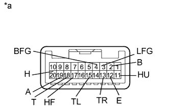
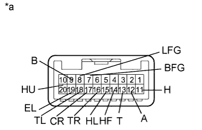

ПЕРЕКЛЮЧАТЕЛЬ СВЕТА ФАР > ПРОВЕРКА |
| 1. ПРОВЕРЬТЕ ПЕРЕКЛЮЧАТЕЛЬ СВЕТА ФАР В СБОРЕ (для левой стороны) |
|  |
Проверьте переключатель освещения.
Измерьте сопротивление в соответствии со значениями, приведенными в таблице ниже.
| Контакты для подключения диагностического прибора | Положение переключателя | Заданные условия |
| 20 (H) - 12 (E) | Переключатель освещения выключен | 10 кОм или более |
| 18 (T) - 12 (E) | ||
| 19 (A) - 12 (E) | ||
| 19 (A) - 12 (E) | Переключатель освещения в положении AUTO | Менее 1 Ом |
| 18 (T) - 12 (E) | Переключатель освещения в положении TAIL | Менее 1 Ом |
| 18 (T) - 12 (E) | Переключатель освещения в положении HEAD | Менее 1 Ом |
| 20 (H) - 12 (E) |
Проверьте переключатель света фар.
Измерьте сопротивление в соответствии со значениями, приведенными в таблице ниже.
| Контакты для подключения диагностического прибора | Положение переключателя | Заданные условия |
| 11 (HU) - 12 (E) | Переключатель ближнего/дальнего света фар - мигание | Менее 1 Ом |
| 17 (HF) - 12 (E) | ||
| 11 (HU) - 12 (E) | Переключатель света фар в положении HI BEAM | Менее 1 Ом |
Проверьте переключатель указателей поворота.
Измерьте сопротивление в соответствии со значениями, приведенными в таблице ниже.
| Контакты для подключения диагностического прибора | Положение переключателя | Заданные условия |
| 13 (TR) - 12 (E) | Переключатель указателей поворота в положении поворота вправо | Менее 1 Ом |
| 13 (TR) - 12 (E) | Переключатель указателей поворота в положении перестроения на правую полосу | Менее 1 Ом |
| 13 (TR) - 12 (E) | Переключатель указателей поворота в нейтральном положении | 10 кОм или более |
| 15 (TL) - 12 (E) | ||
| 15 (TL) - 12 (E) | Переключатель указателей поворота в положении перестроения на левую полосу | Менее 1 Ом |
| 15 (TL) - 12 (E) | Переключатель указателей поворота в положении поворота влево | Менее 1 Ом |
Проверьте переключатель противотуманных фар.
Измерьте сопротивление в соответствии со значениями, приведенными в таблице ниже.
| Контакты для подключения диагностического прибора | Положение переключателя | Заданные условия |
| 4 (BFG) - 3 (LFG) | Переключатель противотуманных фар выключен | 10 кОм или более |
| 2 (B) - 3 (LFG) | ||
| 4 (BFG) - 3 (LFG) | Переключатель передних противотуманных фар включен | Менее 1 Ом |
| 4 (BFG) - 3 (LFG) | Переключатель задних противотуманных фонарей включен | Менее 1 Ом |
| 2 (B) - 3 (LFG) |
| *a | Устройство с неподсоединенным жгутом проводов (переключатель света фар в сборе) |
| 2. ПРОВЕРЬТЕ ПЕРЕКЛЮЧАТЕЛЬ СВЕТА ФАР В СБОРЕ (для правой стороны) |
|  |
Проверьте переключатель освещения.
Измерьте сопротивление в соответствии со значениями, приведенными в таблице ниже.
| Контакты для подключения диагностического прибора | Положение переключателя | Заданные условия |
| 11 (H) - 19 (EL) | Переключатель освещения выключен | 10 кОм или более |
| 13 (T) - 19 (EL) | ||
| 12 (A) - 19 (EL) | ||
| 12 (A) - 19 (EL) | Переключатель освещения в положении AUTO | Менее 1 Ом |
| 13 (T) - 19 (EL) | Переключатель освещения в положении TAIL | Менее 1 Ом |
| 13 (T) - 19 (EL) | Переключатель освещения в положении HEAD | Менее 1 Ом |
| 11 (H) - 19 (EL) |
Проверьте переключатель света фар.
Измерьте сопротивление в соответствии со значениями, приведенными в таблице ниже.
| Контакты для подключения диагностического прибора | Положение переключателя | Заданные условия |
| 20 (HU) - 19 (EL) | Переключатель света фар в положении FLASH | Менее 1 Ом |
| 14 (HF) - 19 (EL) | ||
| 20 (HU) - 19 (EL) | Переключатель света фар в положении HI BEAM | Менее 1 Ом |
Проверьте переключатель указателей поворота.
Измерьте сопротивление в соответствии со значениями, приведенными в таблице ниже.
| Контакты для подключения диагностического прибора | Положение переключателя | Заданные условия |
| 16 (TR) - 19 (EL) | Переключатель указателей поворота в положении поворота вправо | Менее 1 Ом |
| 16 (TR) - 19 (EL) | Переключатель указателей поворота в положении перестроения на правую полосу | Менее 1 Ом |
| 16 (TR) - 19 (EL) | Переключатель указателей поворота в нейтральном положении | 10 кОм или более |
| 18 (TL) - 19 (EL) | ||
| 18 (TL) - 19 (EL) | Переключатель указателей поворота в положении перестроения на левую полосу | Менее 1 Ом |
| 18 (TL) - 19 (EL) | Переключатель указателей поворота в положении поворота влево | Менее 1 Ом |
Проверьте переключатель противотуманных фар.
Измерьте сопротивление в соответствии со значениями, приведенными в таблице ниже.
| Контакты для подключения диагностического прибора | Положение переключателя | Заданные условия |
| 7 (BFG) - 8 (LFG) | Переключатель противотуманных фар выключен | 10 кОм или более |
| 9 (B) - 8 (LFG) | ||
| 7 (BFG) - 8 (LFG) | Переключатель передних противотуманных фар включен | Менее 1 Ом |
| 7 (BFG) - 8 (LFG) | Переключатель задних противотуманных фонарей включен | Менее 1 Ом |
| 9 (B) - 8 (LFG) |
| *a | Устройство с неподсоединенным жгутом проводов (переключатель света фар в сборе) |